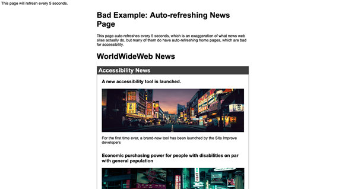

Time limits
Time limits (overview)
Time limits are a potential barrier to people with disabilities such as blindness, low vision, dexterity impairments, and cognitive limitations. These users may require more time to read content or to perform a task such as completing an on-line form. WCAG requires that content with time limits offers one of the following features:
- Turn off: The user is allowed to turn off the time limit before encountering it.
- Adjust: The user is allowed to adjust the time limit before encountering it to a length at least ten times the default setting.
- Extend: The user is warned before time expires and given 20 seconds to extend the time limit.
Any process that happens without user initiation after a set time or on a periodic basis is a time limit. This includes a partial or full update of content (such as a page refresh), changes to content, and the expiration of a window of opportunity for a user to react to a request for input. It also includes content that is updating too fast for the user to read or understand – any animated, moving or scrolling content.
Examples:
- A form with a time limit offers a control that allows the user to turn it off or extend it up to ten times the default.
- After a period of user inactivity, a client-side script asks if the user needs more time. If it doesn’t get a response within 20 seconds, it times out. Note that 20 seconds is the minimum time.
- A site with a rotating banner offers a control that allows the user to extend the time between updates as much as ten times the default.
- A site with a rotating banner offers a pause button.
- A page with animated text that scrolls, appears and fades away offers the user a pause button.
With session timeouts, present warning messages in a popup dialog (the WAI-ARIA Dialog pattern and the WET session timeout are described in module 12) with options for the user to either extend or end the session.
For timers with fixed deadlines, provide a countdown feature with ARIA live announcements at strategic intervals. See the example in the preceding section, Good example: Countdown announcing at intervals
When refreshing/reloading a page, ask the user’s permission. An automatic page refresh/reload can cause difficulties for people with motor impairments, people with low vision, people who are blind, and people with certain cognitive limitations. Screen reader users may not have sufficient time to find their place before the page refreshes again. Instead, notify users that newer content is available and provide the options to update or continue with the old content. If the content update is urgent, use a popup dialog and shift the user’s focus to it; otherwise, use an eye-catching ARIA live region with role=”alert”.
Good example: Session timeout
In this example, after 15 seconds of inactivity JavaScript launches and shifts user focus to a pop-up dialog that uses the role=”alertdialog" attribute. The user can choose to Continue Session or End Session. If the user clicks Continue Session, JavaScript resets the 15 second counter. If the user clicks End Session, JavaScript exits the page.
Open the session timeout example.
Code begins
#modalOverlay {
width:100%;
height:100%;
top: 50%;
left: 50%;
position: absolute;
}
[role=alertdialog] {
position: relative;
width: 80%;
margin-left: -40%;
height: 400px;
margin-top: -200px;
padding: 5px;
border: thin #000 solid;
background-color:#fff;
}<main>
<h1>Accessible session timeout dialog</h1>
<p> after 15 seconds of inactivity JavaScript launches and shifts user focus to a pop-up dialog that uses the role=”alertdialog" attribute. The user can choose to Continue Session or End Session. If the user clicks Continue Session, JavaScript resets the 15 second counter. If the user clicks End Session, JavaScript exits the page.</p>
</main>To accommodate a focus bug in VoiceOver, the JavaScript hides the main and nav elements with aria-hidden="true" and CSS display: none, then a millisecond later cancels that out.
View Javascript
<script>
startTimeout();
function startTimeout(){
setTimeout(function(){
$('main, [role=navigation]').attr('aria-hidden','true').css('display','none');
setTimeout(function(){
$('main, [role=navigation]').attr('aria-hidden','true').css('display','inherit');
}, 1);
$('body').attr('style','background-color:gray;');
$('a').attr('tabindex','-1');
$('a').attr('style','cursor:default;');
$('button').attr('disabled','true');
var modalOverlay = $('<div>').attr({id:"modalOverlay"});
$(modalOverlay).appendTo('body');
var dialog = $('<div>').attr({role:"alertdialog", "aria-labelledby":"alertHeading", "aria-describedby":"alertText"});
$(dialog).html('
<h1 id="alertHeading">Session Timeout!</h1>
<div id="alertText">
<p>
Due to inactivity, your session will expire in 2 minutes. If additional time is required, please click "Continue Session". To allow this session to end, click "End Session".
</p>
</div>
<button id="continue">Continue Session</button>
<button onclick="window.location.href = “https://accessible.canada.ca/;” > End Session </button>').appendTo('#modalOverlay');
$('#continue').focus();
$('#continue').click(function(e) {
$('main, [role=navigation]').attr('aria-hidden','false');
$('body, a').removeAttr('style');
$('a').removeAttr('tabindex');
$('button').removeAttr('disabled');
$(modalOverlay).remove();
$(dialog).remove();
startTimeout();
});
}, 15000);
}
</script>Code ends
Reference: https://pauljadam.com/demos/session-timeout-alertdialog.html
Bad example: Session timeout with no option to extend
Ending a session without proper warning risks frustration and loss of work. This example demonstrates a warning message to the user without the option of continuing to extend the session.


Code begins
#timeOut
{
background-color: rgb(247, 231, 14);
}<body>
<form id="form1" runat="server">
<div>
You will be auto logged out in <span id="timeOut"></span> seconds.
</div>
</form>
</body><script type="text/javascript">
var IdealTimeOut = 20; //10 seconds
var idleSecondsTimer = null;
var idleSecondsCounter = 0;
document.onclick = function () { idleSecondsCounter = 0; };
document.onmousemove = function () { idleSecondsCounter = 0; };
document.onkeypress = function () { idleSecondsCounter = 0; };
idleSecondsTimer = window.setInterval(CheckIdleTime, 2000);
function CheckIdleTime() {
idleSecondsCounter++;
var oPanel = document.getElementById("timeOut");
if (oPanel) {
oPanel.innerHTML = (IdealTimeOut - idleSecondsCounter);
}
if (idleSecondsCounter >= IdealTimeOut) {
window.clearInterval(idleSecondsTimer);
alert("Your Session has expired. Please login again.");
window.location = "https://bati-itao.github.io/";
}
}
</script>Code ends
Bad example: JavaScript automatically refreshes a page
View HTML
Code begins
<html>
<head>
<script type = "text/JavaScript">
<!--
function AutoRefresh( t ) {
setTimeout("location.reload(true);", t);
}
//-->
</script>
</head>
<body onload = "JavaScript:AutoRefresh(5000);">
<p>This page will refresh every 5 seconds.</p>
<style>
body {
font-family:Arial, sans-serif;
}
.image1, .image2, .image3, .image4{
display:inline-block;
}
.right {
float:right;
}
#container {
max-width:631px;
margin:auto;
}
section {
padding:0 20px 20px 20px;
border:1px solid grey;
margin:20px 0;
}
section h2 {
margin:0 -20px 0 -20px;
padding:3px 6px;
background:#3f3f3f;
color:#fff;
}
.city {
float:left;
width:50%;
}
.clear {
clear:both;
}
</style>
</head>
<body>
<div id="container">
<h1>Bad Example: Auto-refreshing News Page</h1>
<p>This page auto-refreshes every 5 seconds, which is an exaggeration of what news web sites actually do, but many of them do have auto-refreshing home pages, which are bad for accessibility.</p>
<h1>WorldWideWeb News</h1>
<section id="headlines">
<h2>Accessibility News</h2>
<div class="version1">
<h3>A new accessibility tool is launched</h3>
<p><img src="img/image1007.jpg" width="590" height="180" alt=""/></p>
<p>For the first time ever, a brand-new tool has been launched by the Site Improve developers. </p>
</div>
<div class="version2">
<h3>Economic purchasing power for people with disabilities on par with general population</h3>
<p><img src="img/image1008.jpg" width="591" height="224" alt=""/></p>
<p>After centuries of institutional neglect and powerful socioeconomic forces keeping most people with disabilities at or near the poverty level, modern societies have ensured that people with disabilities will not be subjected to the same economic disadvantages as their predecessors.</p>
</div>
<div class="version3">
<h3>Climate disaster averted</h3>
<p><img src="img/image1009.jpg" width="589" height="331" alt=""/></p>
<p>Against all political odds, leaders around the world united to enact legal protections that will save the planet from its greatest threat: ourselves.</p>
</div>
</div>
</section>
</body>
</html>
Code ends
Related WCAG resources
Related WCAG resources
Success Criteria
- This Success Criterion works in tandem with Success Criterion 2.2.1 Timing Adjustable, but is specifically focused on notification of timeouts related to user inactivity.
Techniques
Situation A: If there are session time limits:
- G133: Providing a checkbox on the first page of a multipart form that allows users to ask for longer session time limit or no session time limit
- G198: Providing a way for the user to turn the time limit off
Situation B: If a time limit is controlled by a script on the page:
- G198: Providing a way for the user to turn the time limit off
- G180: Providing the user with a means to set the time limit to 10 times the default time limit
- SCR16: Providing a script that warns the user a time limit is about to expire AND SCR1: Allowing the user to extend the default time limit
Situation C: If there are time limits on reading:
- G4: Allowing the content to be paused and restarted from where it was paused
- G198: Providing a way for the user to turn the time limit off
- SCR33: Using script to scroll content, and providing a mechanism to pause it
- SCR36: Providing a mechanism to allow users to display moving, scrolling, or auto-updating text in a static window or area